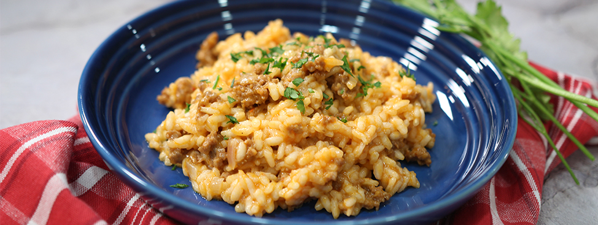

Sausage Risotto

Italian Style Sausage Risotto
This recipe is a very basic sausage risotto. This dish is very labour intensive, so be ready to be cooking non-stop for the next hour or so! The ingredients list is just for reference, so feel free to substitute the type of sausage or the broth!
Ingredients
- 1 mild Italian sausage link
- 4 tablespoons diced shallots
- 1/2 teaspoon salt, or more to taste
- 1 cup Arborio rice
- 1/2 cup any cooking white wine
- 4 cups chicken broth, or more as needed
- 1/2 cup grated parmesan cheese
- 3 sprigs fresh parsley, or to taste